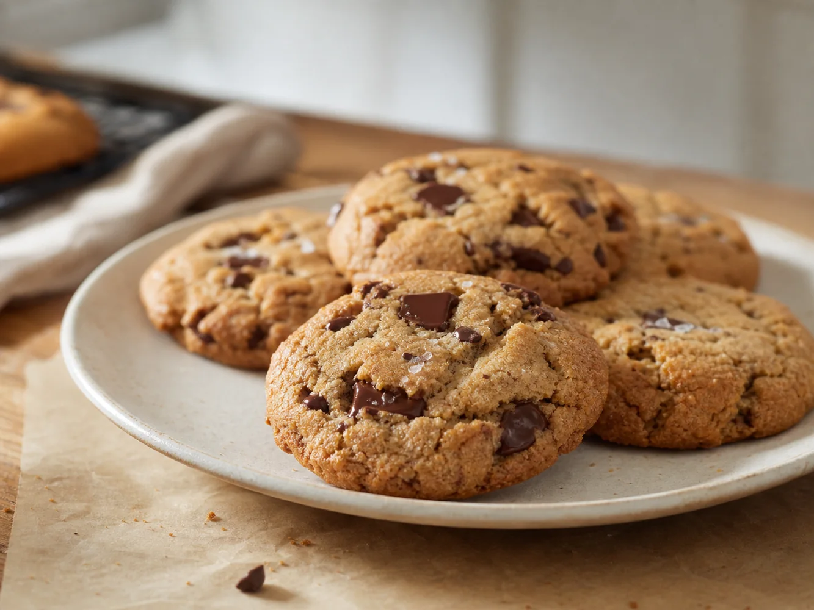

About the baker
Baked by Jake in Barnsley.
Jake's Bakes is a small home cookie project built around one simple idea: a proper box of cookies can make the weekend feel a bit more special.
The focus is brown butter, generous texture and careful small-batch baking. Nothing is rushed, and every preorder is made with the same kind of care you would want if you were handing a box to someone you like.
For now, the model is intentionally small: a weekly Friday preorder, 25 boxes, and local collection only.
Pre-order now